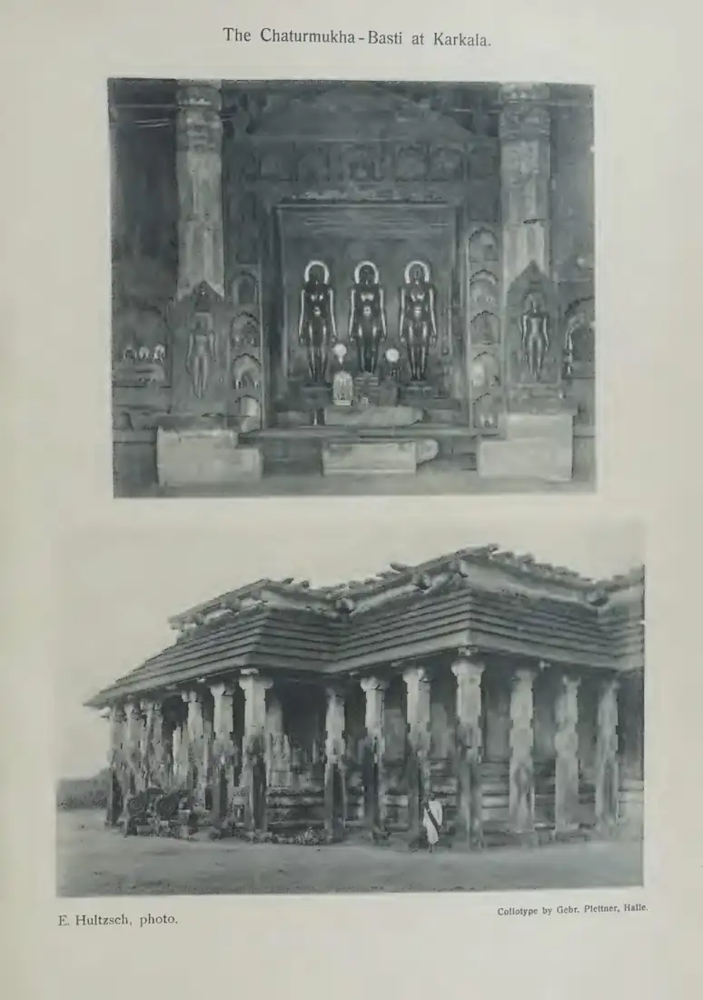

Kârkala inscription of Bhairava II.; Śaka-Samvat 1508
KARKALA INSCRIPTION OF BHATRAVA II. ;
SAKA-SĀMVAT 1508.
SAKA-SĀMVAT 1508.
BY H. KRISHNA SASTRI, B.A.
The village of Kārkala, which is mentioned as Kārakala in this inscription (text line 14) and other connected ones, is 18 miles east-south-east of Udipi, the head-quarters of the tāluka in which it is situated, and 10 miles north of Mūdabidure. It is the largest Jaina settlement in the South Canara district of the Madras presidency and contains, besides the colossal image of Gummata,4 a number of Jaina temples which are ruined and out of repair with the single exception of the Chaturmukhabasti.5 This temple is situated opposite to the Jaina maṭha6 at Kārkala, on a hillock7 half as high as the hill on which the colossus stands. Hiriyaṅgaḍi, i.e. 'the big bāzār,' which is now a few furlongs distant from Kārkala, but appears, from its very name, to have once formed the commercial quarter of the town,8 contains, besides some bastis, a beautifully
1 Pischel, § 176.
2 Compare Pischel, § 357.
3 Hèm. II. 156.
4 A photograph of this colossus is given above, Vol. VII. Plate facing p. 112.
5 For a detailed description of this temple by Mr. Walhouse see Ind. Ant. Vol. V. p. 39 f.; Mr. Sturrock's South Canara Manual, Vol. I. p. 89 f. and the Government Epigraphist's Annual Report for T900-01, paragraph 6.
6 The Jaina maṭha at Kārkala is presided over by a pontiff, just as the maṭhas at Mūdabidure, Sravaṇa-Belgola and Humcha. He bears the title Lalitakīrti and is reported to be the trustee of the Jaina temples at Kārkala and in its neighbourhood. In the inscriptions at Hiriyaṅgaḍi near Kārkala, the teachers to whose pontificate Kārkala and the surrounding country belonged are generally called Lalitakīrti-bhattārakadēva, with the word Maladhāri prefixed to it in two of them, viz. Nos. 66 and 70 of the Government Epigraphist's collection for 1901. No. 67 of the same collection makes Lalitakīrti the vichārakarttā or 'supervisor' of the charity recorded therein; and No. 70 says that these teachers belonged to the Kundakunda division, were lords of the lineage of Panasôkâ and members of the Kālôgragana. In v. 4 of the subjoined inscription, which does not mention their division (anvaya), it is stated that the Lalitakīrtis belonged to the Dēśigana. Perhaps Kālôgragana was a local branch of the Dēśigana. Panasôkâ has been identified with Hanasôge in the Mysore State; see above, Vol. VII. p. 110, note 1.
7 The inscription gives this hill the name of Chikkabetta (i.e. 'the small hill') in order to distinguish it from the higher hill on which the colossus is set up.
8 See Ind. Ant. Vol. V. p. 40.
preserved Jaina pillar1 (mānastambha).2 A lithograph of a similar pillar at Vēnūr is given in Ind. Ant. Vol. V. Plate facing p. 39. Prof. Hultzsch, who has published3 three of the inscriptions at Kārkaļa, asked me to edit the subjoined record.4 The black granito slab on which it is engraved is set up on the proper right of the western entrance into the sanctum sanctorum of the Chaturmukhabasti. At the top of the slab are, in relief, the following sculptures. In the centre, within a mandapa surmounted by a triple umbrella, is a Jaina figure squatting on a raised seat; the mandapa is flanked on both sides by a lampstand, and beyond the lampstand is the disk of the sun on one side and the crescent of the moon on the other; "below the moon is the figure of a cow suckling its calf. The inscribed surface of the slab, including the crased lines at the end measures roughly 4' 4½" by 3' 2".
The record is written in Kanarese characters of the period to which the inscription belongs, between two margins which are marked out on both sides of the slab by two double lines with a space of between them. These double lines are entered on either margin up to l. 42 where the main portion of the inscription ends. It contains eight Sanskrīt verses (ll. 1 to 8, l. 15 f. and l. 49 f.) and four short sentences (ll. 1, 3 and 8) in the same language. The remainder of the inscription is in Kanarese prose. At the end is a diagram, consisting of a square bounded by a double line. Within this is another square, similarly bounded by a double line and sub-divided into 25 minor squares with single letters written in each. The diagram is inserted between ll. 42 and 49 just in the centre of the slab, thereby dividing ll. 43 to 48 into two equal halves. About a dozen syllables in l. 42, the second halves of ll. 43 to 46, the diagram itself and the remainder of the inscription are faintly engraved. A few lines at the end of the inscription are completely erased. Although comparatively modern, the Kanarese characters in which the inscription is written differ in many points from those of the present day. Aspirates are not generally distinguished by a vertical stroke added at the bottom of the letter, except in pha of phula (l. 38); da is distinguished from dha, as in old Kanarese, by a small opening at the right side of the letter; in bha the aspiration is marked by the talekaṭtu and a small projecting stroke at the bottom of the left side, which seems to be the origin of the vertical stroke of the modern bha; kha, gha, and tha are distinguished, by their very form, from the corresponding unaspirates. Chha, dha and tha do not occur in their primary form as independent letters, but only in their subscript secondary forms. Cha is differentiated from ba sometimes by the talekaṭtu alone (e.g. cha of aichari° in l. 40), and in other cases by the talekaṭtu and a slight indenture at the middle of the left side (e.g. cha of °chaṅ-lra, l. 13); in modern Kanarese this indenture is projected out into a horizontal stroke. In cases, however, where the i-curl is added to cha, this horizontal stroke is necessarily introduced. The same remarks hold good as regards the indenture in the middle of ka. The loop on the left side of da is not fully developed. Ta and ṭa still preserve their older forms. Sha is, as in old Kanarese, written like pa, with a small slanting stroke cutting its left side in the middle. Ra, which is now altogether replaced by the common ra, occurs in ll. 12 (twice), 17, 25, 27, 28,
1 South Canara Manual, Vol. I. p. 19.
2 See above, Vol. V. p. 171, note 5. The mānastambhas, which are generally graceful, high and imposing, have to be distinguished from other Jaina pillars neither so tall as the former nor bearing any mandapas on their tops. These latter are called Brahmadēva pillars and appear to be usually set up in front of colossal statues. The Tyāgada-Brahmadēva Pillar (figured on Plate facing p. 33 of the Introduction to Mr. Rice's Śravaṇa-Belgoļa Inscriptions) is set up opposite to the colossal statue on the Doddabeṭta hill at Śravaṇa-Belgoļa; the Kūge-Brahmadēva pillar at the entrance into the bastis on the Chikkabeṭta hill of the same village, indicates perhaps the existence of the unfinished colossus on that hill (ibid. p. 29, note 1); and the colossi at Kārkaļa and Vēnūr have simila₹ pillars in front of them, bearing an image of Brahmadēva on their tops (Government Epigraphist's Annual Report for 1900-01, paragraphs 6 and 7).
3 Above, Vol. VII. p. 109 ff.
4 A tentative transcript and translation of it was published by Mr. Walhouse in Ind. Ant. Vol. V. pp. 40 ff.
30, 32, 34, 37, and 43; la is written in its proper form but looks like a hook with the talekat̄tu attached to it. Among vowels, initial u and û which occur in ll. 37 and 9, respectively, are written exactly as in modern Telugu. The vowel-signs i and î are not always distinguished; and where they are, î is represented by a loop at the end of the i-curl; e resembles i in almost every respect, except that, before being added, it makes a small angle with the letter, which the i-curl does not. The angle perhaps is meant for the talekat̄tu which represents the a-sign, and this with the i-curl attached to it gives the compound e-sign. O and ô (the latter being occasionally distinguished from the former by a loop at the end of the o-curl) are expressed, as in Telugu, by attaching to the top-stroke of the letter two small semi-circular curves, the second of which is bent down a little lower than the first. Exception is, however, made in the case of ma, ya and certain conjunct consonants where, as in modern Kanarese, o is denoted by ê+û. Many of these remarks are found, on comparison, to be applicable also to the Harihar stone inscription of Achyutarâya of Śaka-Saṅvat 1460 (=A.D. 1538-39) which is photo-lithographed in Ind. Ant. Vol. V. Plate facing p. 362. It may be remarked that to this day the Jainas use an older Kanarese script than other Kanarese people, and that their way of writing bha, la and ka and of affixing i, e and o-curls to consonants is not very different from what we find in this inscription. As regards orthography: The nasals preceding other letters of their class are invariably changed into an anusvâra; of double nasals of the same class, the first always becomes an anusvâra, provided it does not come after an r, the only exception being nni of °pânni (l. 7); and the doubling of the consonant after an r is common. A hiatus between two vowels, which is not allowed by the rules of saṅdhi, occurs in °traû for °travû (l. 9), °ranei for °raneyi (l. 18), and °sthâi for °sthâyi (l. 26). Sâl- for sâl- (l. 19) and sîta for sîta (l. 41), double dental n for the double lingual n, the aspirate for the unaspirated letter and vice versâ are purely graphical errors. Among words deserving particular mention are certain special phrases of Jaina ritual (hâladhâre, ashtâhnîka, siddhachakra, etc.), some fiscal terms peculiar to the South Canara district (mûđe, hâne, kuđute, hâda, bet̄tu, bâlu, etc.), and some expressions which are not intelligible to me (e.g. ađipina-mâliti, bajakala, kambula, etc.). The use of the Kanarese word ágara instead of the Sanskrit ágâra in v. 7 is a mistake. The construction of the Kanarese passages is often complicated.
The inscription opens with an invocation of Vitarâga and the verse śrîmat-parama-gambhîra, etc., with which almost all Jaina inscriptions begin. It then invokes (verses 2 and 3) the blessings of the Tîrthakaras (Jina, Jinapa, Jinêndra or Tîrtha), of Dôrbali, and of the goddess Padmâvatî of Pombuchcha on the donor Bhairava or Bhairavêndra, called also Bhairarasa-Vođeya and Immađi-Bhairarasa-Vođeya in the Kanarese passages (ll. 48 f. and 13 f.). We may at once call this chief Bhairava II.1 in order to distinguish him from his maternal uncle and namesake Bhairava I. referred to in the inscription as Bhairavarâja (l. 6) and Bhairarasa-Vođeya (l. 12). The record goes on to state that, at the advice of the Jaina teacher Lalitakirti of the lineage of Panasôge and of the Dêsîgapa (v. 4), Bhairava II. built (l. 19) the temple of 'the three jewels' (ll. 7, 8 and 17), by which evidently the Chaturmukhabasti is meant. Verse 6 and the Kanarese prose passage which follows it give the date of the foundation and consecration of the temple, viz. the Śâli-(or Śâlivâhana-)Śaka year 1508, the Vyaya-saṅvatsara, the sixth tithi of the bright half of Chaitra, a Wednesday, when the nakshatra was Mrigaśirsha or Mrigaśirâ (ll. 8 and 9) and the lagna Vrîsha or Vrîshabha (loc. cit.). This date has been calculated2 by Prof. Kielhorn and is found to be correct in all details for Wednesday, 16th March A.D. 1586. The Kanarese passages in ll. 10 to 14 and 17 to 18 contain a string of
1 The distinction applies only to this paper, because there have been in this family many chiefs bearing the same name prior to the donor of our inscription. The Jaina chiefs belonging to other families on the western coast also frequently called themselves Bhairava. Writers on the history of the northern portion of South Canara invariably refer to the Kârkala chiefs as "Byrasu Wodears."
2 List of Southern Inscr. No. 993.
Plate 1 is bound after this page.
birudas of Bhairava II. and furnish the name Tribhuvanatilaka-Jina-Chaityálaya1 (l. 17) for the temple, which is described as being auspicious on every side (sarvatóbhadra)2 and as having four symmetrical faces (chaturmukha).3 It was built on the Chikkabeṭṭa hill in the vicinity of the blessed Gummatēśvara at Pāṇdyanagari in Kārakala (l. 14 f.). Pāṇdyanagari, just like the modern Hiriyaṅgađi, was apparently another suburb of Kārakala and comprised within itself the Chikkabeṭṭa hill, on which the Chaturmukhabasti is built, the colossal statue, and the long narrow street that runs between them, containing a few Jaina houses and the maṭha. It probably received its name from Pāṇdyaráya or Víra-Pāṇdya, who set up the famous colossus.4 In ll. 19 ff. we are told that Bhairava II. set up the images of the three Tirthakaras Ara, Malli and Munisuvrata5 on each of the four faces of the temple and consecrated at the same time the images of the 24 Tirthakaras and those of the Jinas together with Brahma and Padmávati.6
Ll. 22 to 42 record the grant of the village of Telāra, which yielded a revenue of 700 múđe of rice. Besides this, 238 pagodas (gudyána or varaha, l. 28) from the sidilháya (i.e. the established revenue) of the villages Rañjála and Nallúru were also granted. The income was to be utilised for the requirements of worship in the four symmetrical central shrines of the temple7 and in the subordinate shrines, by fourteen families of Stháníkas8 appointed for that purpose. Provision was also made for temple servants and musicians. The four groups (tanđa) of Jaina mendicants who had quarters in the temple were supplied annually with 8 blankets, to protect themselves from cold, and with 1 blanket to receive the daily doles of rice which they collected from door to door. They were also given the necessary requirements for oil-baths, viz. oil, soap-nut and fuel. Ll. 43 to 47 record two additional grants, perhaps by the same chief, for the daily offerings (1) to Chandranátha in the basti situated within the quadrangle of the hiriya-aramane (i.e. the big palace),9 and (2) to Párśvanátha in the basti on the Góvardhanagiri hill.10 The inscription ends with a puzzle (v. 8), which was composed by the author of the inscription in order to celebrate the power of the five syllables Śrivitaráya (i.e. Jina), which the donor Bhairava II. is said to have affixed to the inscription with his own hand in token of his approval of the charities recorded therein. The four erased lines at the end of the inscription may have contained the clue for the right interpretation of the puzzle.
1 Perhaps so named in imitation of the Hosabasti at Múđabidure, which according to the inscriptions of that temple was called Tribhuvanachúđámaṇi-Chaityálaya and was built in Śaka-Samvat 1351, i.e. 157 years prior to the construction of the Chaturmukhabasti.
2 This attribute given to the temple appears to have suggested the insertion of the puzzle in the sarvatóbhadra verse at the end of the inscription.
3 Chaturmukhabasti, the present popular name of the temple, is derived from the fact that the temple was constructed with four symmetrical faces (chaturmukha).
4 Above, Vol. VII. p. 109 f.
5 Same as Suvrata mentioned in v. 3.
6 These two deities are different from the Bráhmaṇical gods of the same name. Brahma and Padmávati in Jaina mythology are two demigods (yaksha and yakshinti) who attend invariably upon the Tirthakaras.
7 The allotments made for the worship at each gate are very carefully recorded, and from these it appears as if the western gate, which enjoyed the largest share of the gift in money, was the primary one, while the three other symmetrical gates were only of secondary importance. This is also proved by the fact that at this particular gate alone the images of the 24 Tirthakaras were consecrated (ll. 20 and 39).
8 The Jaina priests are now generally known by the name Indra (Government Epigraphist's Annual Report for 1900-01, paragraph 5). The name Sthántka given to them in the inscription appears to be used in imitation of the name given to a section of Bráhmaṇas in South Cauara, whose sole profession is temple service.—See Mr. Sturrock's South Cauara Manual, Vol. I. p. 154.
9 This might be the name of one of the palaces of Bhairava II. himself, which was probably situated either at Pāṇdyanagari or Hiriyaṅgađi, both of which are still covered with ruins of buildings.
10 This is perhaps one of the many small hills that surround Kārakala. I was informed while there, that one of these bears at its top a Jaina basti even now. It will be too fanciful to connect the name with Góvardhanagiri in the Shinoga district, which 'is said to have been fortified by Jinadatta' (the mythical founder of a Jaina line of king's in the south); (Mysore Gazetteer, Vol. II. p. 452).
The donor Bhairava II. belonged to the lunar race (v. 5 and l. 11), to the Káśyapa-gôtru (l. 11) and to the family of Jinadatta or Jinadattarâya (ll. 6 and 12) and was the son of Gummatâmbâ (ll. 6 and 13) and of Vîra-Narasimha-Vanganarêndra (l. 13).1 Gummatâmbâ was the sister of Bhairava I. (v. 5), the son of Honnamâmbikâ (l. 12). Some of the titles of Bhairava II. were: (1) arirâya-gaṇḍara-dâvapi, (2) 'the lord of Patṭti-Pombuchcha the best of cities,' and (3) 'he who has obtained excellent boons from (the goddess) Padmâvati of Pombuchcha.' The second and third of these, coupled with his professed descent from Jinadatta, connect Bhairava II. with the Śântara chiefs of Pombuchcha, who also traced their ancestry to Jinadatta and were worshippers of the goddess Padmâvati of Pombuchcha.2 Mr. Rice in the Introduction to Vols. VI. and VII. of his Epigraphia Carnatica mentions a number of records which he assigns to the early members of the Śântara family,3 most of whom, as stated therein, were feudatories of the Râshṭrakûtas and were ruling the Śântaļige country.4 Pombuchcha, the capital of the Śântaras, is spelt in early records as Pombulçha or Patṭti-Pombuchchapura and is identical with the modern Humcha or Hombucha in the Nagar tâluka of the Shimoga district; it is mentioned in connection with the Śântaras even in their earliest records. The alleged descent of the Śântaras from Jinadattarâya, the mythical founder of the line of Jaina kings in the south, is not warranted by any of these earlier inscriptions. A long account of the Śântaras which connects them with Jinadatta, first appears in a record of A.D. 1077 at Humcha itself.5 The Baligâmi record of A.D. 11496 makes no reference whatever to the mythical Śântaras; the stone inscription from Punêdahalî7 dated in A.D. 1287, connects Jinadatta with the Châlukya family. In any case the
1 In No. 993 of Professor Kielhorn's List of Southern Inscr., which deals with the date of this record, Changanarêndra has to be corrected into Vanganarêndra, and the title 'supreme lord of Patṭti-Pombuchchapura' there applied to Bhairava I. should, according to the present interpretation of the passage, be transferred to his son Bhairava II.
2 See below, note 5.
3 The Śântaras of Pombuchcha and the Kadambas of the western coast appear from these records to have been related to each other in some unexplained way. This fact is cleared up in one of the later Śântara inscriptions at Bałagâmi, which states that the Śântara chief Jagaddêva, who was a feudatory of the Western Châlukya Jagadêkamalla II., and the Kadamba chief Jayakêsin, who was the son of Vijayâdityadêva, were sons of two uterine sisters (Dr. Fleet's Dyn. Kan. Distr. p. 458 and note 2). The Âlupas of the western coast, some of whose early inscriptions are found at Udiyâvara near Udipi, may have had some connection with Pombulçha, since in two unpublished inscriptions from that village (Nos. 97 and 98 of the Government Epigraphist's collection for 1901) Pombulçha and Udayâpura (i.e. Udiyâvara) are mentioned together with reference to certain tolls and nakaras (trading classes ?) of the two places; another (No. 108 of the same collection) states that Śvêtavâhana, who was the lord of Patṭti (Paṭti odeyôn), (i.e. †atṭti-râjya, the province of which Humcha was the capital), fell in battle while entering (i.e. capturing) Udayapura; and Mr. Rice's Ep. Carn. Vol. VI. Kp. 37 refers to the reign of Chitravâhana, evidently an Âlupa king, over Ponbuchcha.
4 The exact position of this territorial division is not fixed. Dr. Fleet places it somewhere west of the Mysore State (Dyn. Kan. Distr. p. 306), and Mr. Rice states that it corresponds with the present Tîrthahalî tâluka of the Shimoga district (Ep. Carn. Vol. VII. Introduction, p. 17). As however Humcha in the Nagar tâluka was the capital of the Śântara chiefs who were ruling over the Śântaļige one-thousand country, as the earlier Śântara records found in the Shikarpur tâluka of the Shimoga district mention certain villages of this tâluka as belonging to the Śântaļige country, and as Sêtuvinabidu or Sêtu, the capital of the Śântara chief Jagaddêva in A.D. 1149, 'would be located by Mr. Rice somewhere in Canara' (Dyn. Kan. Distr. p. 458, note 1), it may be assumed that Śântaļige included the western portion of the Shimoga district, i.e. the Shikarpur, Nagar and Tîrthahalî tâlukas, and probably also a portion of the South Canara district.
5 Ep. Carn. Vol. VIII. No. 35. This record makes Jinadatta a member of the family of Ugra-vainša and the hereditary lord of Uttara-Madhurâ. It gives also the story of the goddess Padmâvati, who, being pleased with Jinadatta's prowess, built for him the city of Pomburcha or Kanakapura. One of his descendants, Vikrama-Śântara, is stated to have fixed the boundaries of the Śântaļige thousand province (J. R. A. S. for April 1905, pp. 295 and 298).
6 No. 32 of the Government Epigraphist's collection for 1892.
7 Ep. Carn. Vol. VII. Sk. 312.
claim which Bhairava II. puts forth to belong to the family of Jinadatta implies nothing more than his connection with the Śāntaras and the Jaina creed which he followed.
Vol. VI. of the Epigraphia Carnatica contains also a number of inscriptions of a family called by Mr. Rice Kalasa-Kārkaļa. He gives an account of these chiefs in his Introduction to the same volume, pp. 19 to 21. The texts published by him show that they had no connection whatever with the Śāntaras of Humcha, and that of the records prior to the time of the Vijayanagara king Děvarāya II. only a single one may be assigned to the family, viz. Mg. 65 dated in A.D. 1209, where the chief Vira-Balludėva receives the title mandulāka-guađara đávani, which in the slightly altered form arirāya-ganđara-dávani was assumed by almost all the subsequent members of the family. From the time of Děvarāya II. downwards the records are more definite and furnish a connected account of the chiefs, a list of whom is given by Mr. Rice on p. 20 of the Introduction. The donor of the subjoined grant figures as the last person in that list. We gather also from these records that the Kalasa-Kārkaļa chiefs followed the alīya-santāna law of inheritance and were Jainas in religion, though most of their inscriptions found at Kalasa and Koppa record grants to Šiva temples. As a rule they seem to have acknowledged the Vijayanagara kings as their overlords. But in Mg. 48, dated in Šaka-Samvat 1424 (= A.D. 1501-2), which was about the period of the overthrow of the Sâluva usurpers at Vijayanagara and of the acknowledgment of the Tuluva Narasa-Nâyaka as sovereign, the Kalasa chief1 Vira-Bhaiarsa-Ođeya seems to have been semi-independent, as no mention is made of any overlord in the inscription. The memorable battle of Tâlikôta dealt the death-blow to the Vijayanagara empire, and the Kalasa-Kārkaļa chiefs were not slow to take advantage of the opportunity to openly assert their independence. Accordingly, in a Koppa inscription (Kp. 57), dated in Šaka-Samvat 1510 (= A.D. 1588-89), Bhayirarasa-Vođeya, son of Vira-Gummađadėvi, who is no doubt identical with the donor of the subjoined inscription, is represented as ruling his kingdom undisturbed (sthira-sâmrâjya). The subjoined Chaturmukhabasti inscription of this chief, which is dated two years earlier, contains a long string of high-sounding birudas, and this fact may be taken to show that Bhairava II. had then already declared his independence. But this state of things did not continue long; for in Šaka 1531 (= A.D. 1609-10), Bhayirarasa-Vođeya, the son of Vira-Bhairarasa-Vođeya, was ruling the Kalasa-Kârakaļa-râjya as a feudatory of the Vijayanagara king Veûkaťa I. (Mg. 63). From the above records we further learn that the country over which these chiefs originally ruled was called the Kalasa-râjya, which included one thousand villages (see e.g. Mg. 88), and the chief town of which was evidently Kalasa above the ghauts. But in Šaka-Samvat 1438 (= A.D. 1516-17), Kārkaļa seems to have been added to it; for Yimmađi-Bhaiarsa-Ođeya, who in Mg. 39 is stated to have been ruling over Kalasa-râjya in the dvitiya-Śrâvapa of Šaka-Samvat 1438, was, according to Mg. 41,2 ruling over the Kalasa-Kârakaļa-râjya in the (nija)-Śrâvapa of the same year, and in Šaka-Samvat
1 I have intentionally used the term 'Kalasa chief;' for, as will be seen in the sequel, the Kalasa-Kārkaļa chiefs became rulers of both Kalasa and Kārkaļa only in A.D. 1516-17. Prior to this their dominion was limited to the Kalasa country; and the name Kalasa-Kārkaļa applied to their family prior to A.D. 1516-17 is to be understood as being used only for the sake of uniformity.
2 This inscription supplies the interesting information that, during the reign of the great Krishnarâya of Vijayanagara, Bhujabala-Mahârâya led a campaign against the Tulu-râjya and was encamped at the bhuvana-sâle in Mangalûru. On this occasion the Kalasa-Kārkaļa chief Yimmađi-Bhaiarsa-Ođeya, being dispossessed of (or not being sure of the stability of) his territory, prayed to the god at Kalasa that the invading forces might leave the Tulu country and that he might be undisturbed in his kingdom. This desire being fulfilled, he made certain gifts to that god in his capacity as the ruler of the Kalasa-Kârakaļa-râjya. Bhujabala-Mahârâya, who led the campaign, must be identical with Krishnarâya's elder brother 'Busbalrao,' mentioned on p. 110 of Mr. Sewell's Forgotten Empire. The facts recorded in the inscription show that the Kalasa-Kārkaļa chiefs, who, as already noted, were trying to get independent of the Vijayanagara kings, and had, perhaps, also an idea of extending their dominions below the ghauts, were now threatened to be dispossessed, but, perhaps, on promise of submission were left leuumolested.
1446 (= A.D. 1524-25) the same chief was ruling 'the kingdom below and above the ghauts' (Mg. 62). With the extension of the kingdom the capital also seems to have been removed to Kārkaļa from Kaļasa; for in an inscription of Šaka-Samvat 1452 (= A.D. 1530-31) Vira-Bairarasa-Vođeya is said to have been ruling from his throne at Kārakaļa (Kp. 47). It will be seen in the next paragraph how the Kaļasa chiefs managed to add to their dominions the Kārkaļa country below the ghauts; but for the present it may be enough to conclude from the Koppa and Mūđgere inscriptions published in Mr. Rice's Ep. Carn. Vol. VI. that Bhairava II. of the subjoined inscription was a direct descendant of the Kaļasa family, and that his hereditary ancestral dominion was the Kaļasa country. His name, his title arirāya-ganđara-dávani and the existence of an inscription of his in the Koppa táluka (Kp. 57) all point to the same conclusion.
Turning now to the inscriptions at Kārkaļa itself, from which further information may be expected about the ancestors of Bhairava II., we find that the colossus there was set up by Vira-Pānđya or Pānđyarāya, the son of Bhairavēndra of the lunar race in Šaka 1353, and that in Šaka 1358 the same chief, who is here said to have been the son of Bhairava of the family of Jinadatta, set up the Brahma pillar in front of that colossus.1 An unpublished inscription2 at Hiriyangađi near Kārkaļa, dated in Šaka-Samvat 1379 (= A.D. 1457-58), records a grant to the temple of Némináthasvāmin, while the arirāya-ganđara-dávani, the lord of Paṭṭi-Pombuchchapura, who had obtained excellent gifts from (the goddess) Padmávatidévi, and who was the uplifter of the ocean which was the family of Jinadattarāya— Abhinava-Pāmđyadéva-Ođeya, was ruling over Paṭṭi-rājya. A second inscription3 in the same village, dated in Šaka-Samvat 1514 (= A.D. 1593-94), records grants to Chandranáthasvāmin, while arirāya-ganđara-dávani Pānđyappa-Vođeya, the son of Vira-Bhairarasa-Vođeya, was ruling his country undisturbed (sthira-rājya). This chief is no doubt a son of Bhairava II. and apparently enjoyed the independence which his father also possessed. The earliest of the Kārkaļa inscriptions,4 which is dated in Šaka-Samvat 1256 (= A.D. 1334-35), belongs to the time of Lôkanátharasa, who, though only a mahāmanđalésvara 'who had acquired the five great sounds,' bears the royal titles samastabhuvanáśraya, prithvóvallabha and mahárájádhirája. He also calls himself 'the lord of Uttara-Madhurâ,' 'the jewel of the great Ugra-vainsa,' 'the lord of Paṭṭi-Pombuchchapura,' 'the worshipper of (the goddess) Padmávatidévi' and 'the pupil of (the Jaina teacher) Chârukírti-Paṇđitadéva.' These titles make Lôkanátharasa dacidedly a Sântara chief.5 The existence of this record at Hiriyangađi makes it certain that the descendants of Jinadatta 'removed the capital first to Sisila or Sisukali and then to Karkala, both in S. Kanara' (Mr. Rice's Mysore Gazetteer, Vol. II. p. 456). It will now be easy to see how the Kaļasa chiefs, of whom Bhairava II. was one, came to be connected with the Sântaras, traced their ancestry to Jinadatta, became more zealous Jainas than their ancestors at Kaļasa, and eventually stepped into the place of the Sântaras in the Kārkaļa country. From the fact that the hereditary title arirāya-ganđara-dávani of the Kaļasa chiefs and the prominent Sântara titles of Lôkanátharasa are found combined in the inscription of the chief Abhinava-Pāmđyadéva-Ođeya as early as Šaka 1379, I conclude that the Kaļasa chiefs must have entered into close relationship of intermarriage with the descendants of the Sântara Lôkanátharasa, about Šaka-Samvat 1379 (= A.D. 1457-58), if not a little earlier. Further it may reasonably be assumed that it was by virtue of this reinationship with the local Sântaras that the Kaļasa chief Yimmađi-Bhairarsa-Ođeya, mentioned in the previous paragraph, extended his rule to the territory below the ghauts in A.D. 1516-17.
As regards the territory ruled over by Bhairava II. and his ancestors, a rough idea of its extent may be formed from the name given to it— Kaļasa-Kārakaļa-rájya. To ascertain its exact
1 Above, Vol. VII. p. 109 ff.
2 No. 70 of the Government Epigraphist's collection for 1901.
3 No. 68 of the same collection. 4 No. 71 of the same collection.
5 See above p. 120 note 5.
boundaries, further places below the ghauts and in the neighbourhood of Kârkała will have to be examined. But an inscription in the Koppa tâluka (Ep. Carn. Vol. VI. Kp. 47), dated in Šaka-Sainvat 1452 (= A.D. 1530-31), states that, while Vîra-Bairarasa-Vođeya was ruling on the throne at Kârkała, his younger sister Kâlaladêvi was in charge of (the district) Baguñji-sîme. Mg. 40, dated in Šaka-Sainvat 1474 (= A.D. 1552-53), records that Pânđya-Vođeya was on the throne at Keravase while a certain Bhayirarsannâji was in charge of Kałasa. The same fact is mentioned also in Mg. 60, dated four years later. The district Baguñji-sîme apparently derived its name from the modern village of Bagguñji in the Bâle-Honnûr tâluka, about 8 miles north-east of Šringêri; and Keravase is identical with Keravâse, 8 miles east of Kârkała (Mr. Sewell's Lists of Antiquities, Vol. I. p. 232). Mûđabidure and Vêpûr, two other important centres of Jaina religion in the South Canara district which are not very far from Kârkała, do not appear to have been included in the Kałasa-Kârkała-râjya. The former of these two villages was in the possession of a family of local chiefs called Chauṭar, who were under the direct control of the Vijayanagara viceroys at Mangalore, while the second belonged to another petty Jaina principality, known as Puñjaļi- or Puñjaļike-râjya, and was ruled over by the Ajilar.1 Besides, the villages Mûđabidure and Vêpûr were included within the religious sphere of the Jaina teacher Chârukirti, while Kârkała and its chiefs were subordinate to Lalitakirti.2 It may, therefore, be provisionally assumed that the territory of the Kałasa-Kârkała chiefs extended from Bagguñji above the ghauts to Kârkała below the ghauts, including between them the towns of Keravase and Kałasa. This comprises almost the whole of the present Bâle-Honnûr tâluka3 of the Kađûr district in the Mysore State and the south-eastern portion of the Uđipi tâluka in the South Canara district.
The village of Telâra, which was granted to the Chaturmukhabasti, is situated about 3 miles north-east of Kârkała and is marked on the Madras Survey Map of the South Canara district as Tellâr. The two other villages, Rañjâla and Nallûru, which together contributed a sum of 238 varaha, are situated quite close to each other at a distance of about 4 miles due east of Kârkała and are marked on the same map as Nallur and Renjâla. Several nameless streams are marked on the map round Tellâr, and these may have to be identified with the four boundary streams mentioned in l. 24. Two other proper names which occur in ll. 43 and 47, viz. Ârûru and Kelavase, are identical with 'Arur' and 'Keravase' (Keravâse) on the same map, in the Uđipi tâluka.
The requirements for the daily and annual worship in the temple, for which provision is made, call for a few remarks. The complicated calculations are very carefully worked out, and we are enabled to infer that, in measuring rice, 1 mûđe was = 50 hâne,4 and 1 hâne = 7 kuđute, and that, in counting money, 1 ga was = 10 m. Twelve hâđa5 of oil cost 8 ga 4 m, and 1 hâđa cost 7 m.
1 See the Government Epigraphist's Annual Report for 1900-01, paragraph 5, and above, Vol. VII. p. 114 and note 1. It may here be noted that in an unpublished inscription at Kârkała (No. 69 of the Government Epigraphist's collection for 1901), dated in the cyclic year Viļambin, a certain Bhairarasa-Vođeya, son of Vîra-Bhairarasa-Vođeya of the Kałasa-Kârkała family, presided over the settlement of a dispute, in which the Chauṭaru, Ajilaru, Dêsiñgarasaru and Sišiladarasaru (i.e. the chief of Sišila) acted as arbitrators (madhyastha).
2 From the earliest inscription at Kârkała referred to above, it appears as if the Jainas at that place were, about Šaka 1256, the lay-disciples of Kumudachandra-Bhaṭtârakadêva, a pupil of Bhânukirti-Maladhâridêva of the Kâpûrgana and the Mûlasangha, while the ruling chief Lôkanâtharasa himself was the adherent of Chârukirti-panđitadêva. Perhaps the Lalitakirtis of Hanasôge replaced the Bhânukirtis at Kârkała subsequent to Šaka 1256.
3 The inscriptions of the Kałasa-Kârkała chiefs found in the Koppa and Mûdgere tâlukas are chiefly confined to three villages: Kałasa, Bagguñji and Nârve. The first two villages are now included in the newly formed Bâle-Honnûr tâluka, and the third is on its borders, but included in the Koppa tâluka.
4 In the inscriptions at Vêpûr we find a mûđe = 50 bała (No. 75 of the Government Epigraphist's collection for 1901) or sometimes 40 bała (No. 84 of the same collection).
5 Compare the Sanskrit grain measure áđhaka which is equal to 4 prastha or 16 kuđuva; and also the Tamiľ áđam which is even now used in measuring oil and ghee in the Southern districts.
According to the Madras Manual of Administration, Vol. II. p. 508, 1 múde of corn in South Canara varies between 56, 50, 48, 45, 40 and 35 secs in different localities. The háne, which at Kârkała and in the surrounding country was equal to th of a múde, may therefore be taken to be almost equal to our modern seer (i.e. 80 tolas). Kuđute (coodtay), according to the same authority (loc. cit.), is used only for measuring liquids and is equal to 12 rupees' weight. The late Dr. Kittel in his Kannađa-English Dictionary explains kuđute as 'the palm of the hand hollowed or held as a cup.' This may have been the unit which the South Canara people used for measuring both liquids and grain in the latter half of the sixteenth century; for, 1 kuđute in liquid measure being equal to 12 rupees' weight, and kuđute in grain measure being equal to 1 háne (i.e. 80 tolas, as already pointed out), the above supposition will give us 1 háne = kuđute = nearly 86 tolas, which is not a serious difference.
The abbreviated form ga used in the money calculations denotes a varaha, as stated in text line 28; and Mr. Brown in his Telugu-English Dictionary says that 'in arithmetic it stands for gainđu, i.e. a pagoda;' and under gainđu he says that 'among tradesmen it is a cant word for varaha.' In the Kanarese inscriptions at Kârkała it is used as an abbreviation of gadyáṇa1 and its variants varahagadyáṇa or gadyáṇaka, which are all synonymous with varaha, 'a pagoda equal to Rupees .' In Ep. Carn. Vol. VI. Mg. 48, ga is used to denote a honnu, which according to Dr. Kittel is 'a gold coin, the half of a varaha.' The next coin of lower denomination is always written in the inscription after ga, with a final m preceding it, but there is no indication anywhere as to what this m stands for. The expression ga 765 (Ep. Carn. Vol. VI. Mg. 48) is explained in words as 7 honnu and 5 haṇa, the symbol being evidently introduced to separate the two denominations honnu and haṇa. This symbol (6) is used even now by village accountants and merchants of the Kanarese and Marátha countries in their business books to separate the money columns in calculation, even annas from rupees. Mr. Walhouse in his transcript of this inscription has throughout taken m for this symbol.2 But I do not know whether the symbol 6, which is now used to separate different denominations of Indian and English money, and which was used in Šaka 1424 to separate honnu from haṇa, is also meant by the letter m inserted between the varaha (ga) and the tenths of ga. I have therefore retained the final m and not transcribed it by the symbol 6. The fraction is represented in the inscription by the symbol which, in older inscriptions, is used for '9.' The modern method of expressing the fraction one-half is by two vertical strokes (||), each of which represents . One-eighth is represented by a horizontal stroke (—). In current hand, however, the two vertical strokes that represent are often merged into one. Consequently the symbol for used in the inscription must be a completely reversed variant of the modern form. In ll. 39, 40 and 42 the symbol = is used only as a mark of punctuation, and not as explained above to represent two-eighths, which would in this case be expressed by one vertical stroke, and not by two horizontal ones.
The puzzle contained in the Sarvatóbhadra verse in the Indravajrâ metre at the end of the inscription calls for a short remark. Šišupálavadha, XIX. v. 27 is a verse of the same kind, but it is written in the Anushṭubh metre. Mallinátha's commentary on the verse explains how the letters which form such verses are to be arranged so that, read from any direction in a given order, they may constitute the same verse. I have not found any other Sarvatóbhadra verse in the Indravajrâ metre.
1 The Múđabidure inscriptions mention three different types of gadyáṇas, viz. the Barakanúra-gadyáṇa, the Maṅgalúra-gadyáṇa and the Kathári-ankusa-gadyáṇa (Nos. 52 and 55 of the Government Epigraphist's collection for 1901).
2 It is not impossible that the symbol 6 has been derived from the final m; for in old Kanarese inscriptions the formation of this letter is not far different from the symbol in question; compare above, Vol. III. l. 15 on the Plate facing p. 194.
TEXT.1
1 Śrī-Vitarāgāya namaḥ || Śrīmat-parama-gam[bh]īra-syâ[dvâd]-²âmôgha-
lâmchhanam | jīyât=[t]railôkyanâthasya śâsanam
2 Jina-śâsanam || [1*] Â-chaṁdr-ârk[k]am sthiram bhûyâd=âyuḥ-śrī-jaya-saṁpa-
daḥ(dâ) | Bhairavêmdra-mahî-kâṁtn[h*] śrī-Jinêmdra-prasâdataḥ [||][2*]
3 Avighnam=astu³ || Bhadram=astu || Tīrt[th]-aughaḥ [ś]ukham=akshayam cha
kurutâch=chhrī-Pârśvanâthô balam kîrttiṁ Nêmi-Jinaḥ Suvīra-Jinapa-
4 ś=ch=âyuḥ śriyam Dôrbbaliḥ | kalyâṇâny=Ara-Malli-Suvrata-Jinâ[ḥ] Pombuchcha-
Padmâvati ch=â-chaṁdr-ârkkam=abhîshṭa-dâ=stu suchiram śrī-Bhairava-kshmâ-
5 patêḥ || [3*] Śrīmad-Dêśi-gaṇê⁴ khyâtê Panasôg-âval-îsvaraḥ | yô=bhûl=
Lalitakirtty-âkhyas=tan-mun-îṁdr-ôpadêsataḥ ||[4*] Śrīmat-Sôma-kul-âmpit-âmbudhi-
vidhuh
6 śrī-Jainadatt-ânvayaḥ śrīmad-Bhairavarâja-tuṁga-bhagini-śrī-Guṁ[ma]ṭtâmbâ-sutaḥ |
śrīmad-bhôgi-Surêmdra-Chakri-mahima-śrī-Bhairavêmdra-prabhuḥ śrī-
7 ratna-traya-bhadra-dhâma-Jinapân=nirmmâpya saṁsi[d]dhibhâk || [5*] Śrīmach-Chhâli=
Śak-âbdakê cha galitê nâg-âbhra-bâṇ-êṁdubbiś=ch=âbdê sad-Vyaya-nâmni Chaitra-
sita-shash[th]yâ-
8 m Saumya-vârê Vṛishê | lagnê san-⁵Mṛigaśirsha-bhô chirataram śrī-
Bhairavêmdrêṇa tê śrī-ratna-traya-bhadra-[dh]âma-Jinapâ bhâṁtu pratish[th]â-
pitâḥ || [6*] Jinâya namaḥ⁶ [||*]
9 Svasti śrī [||*] Śâlivâhana-Śaka-varsha (l)⁷ 1508neya Vyaya-saṁvatsarada Chaitra-
[ś]uddha-shashthiyû Budhavâra Mṛigaśirâ-nakshatraû (vû) [V]ṛishabha-
lagnadallû Kaliyug-âbhinava-
10 Bharatêsvara-chakravartti Gutti-haṁnibbara-gamḍa [Pa]ṭṭi-Pombuccha-puravar-
âdî(dhî)śvara maṛc-⁸hokkara-kâva Mâr-âṁta-vairi maṁna(ne)ya-râya-mastaka-
sû(sû)la shaḍ-darśana-s[th]â-
11 pan-âchâryya Sôma-vaṁśa-śikhâmaṇi Kâśyapa-gôtra-pavitrîkaraṇa-daksha Pombuchcha-
Padmâvati-labdha-vara-prasâda samyaktv-âdy-anêka-guṇa-gaṇ-âlaṁkrita Jina-gamḍh-
ôdaka-pa-
12 vitrîkrit-ôttamâṁga aṛuvattâṛu-⁹marṁḍalîkara-garṁḍa Hoṁ[na]mâmbikâ-priyakumâra-
Bhairarasa-Vođeyar-aliyar=enipa śrīmaj-Jinadattarâya-vaṁśa-sudhâ-
13 ṁbudhi-pûrnna(rpṇa)chaṁdra śrīmad-Vira-Narasiṁha-Vaṁ[ga]narêmdra-śrī-
Guṁmaṭâmbâ-kula-dîpaka-priyasûnu arirâya-garṁḍara-dâvaṇi śrīmadh(d)-Iṁmaḍi-
Bhairarasa-
14 Vođeyaru tamage abhyu[d]aya-ni[ḥ*]śrêyasa-lakshmî-sukha-saṁprâ[p]ti-nimittav-âgi
Kârakaṇada Pâṁdyanagariyalli śrī-Guṁmaṭêsvarana saṁnidhânadalli Kailâsa-
giri-sa-
1 From two inked estampages prepared in 1901.
2 The d of syâ has an indenture at the top, which makes it look like the ō-sign attached to lō of trailôkya in the same line.
3 The whole of this line is engraved so close to the projecting top section of the slab as to make the letters on the estampage look faint and broken; but every syllable can be made out from the back of the impression.
4 The syllable ṇe, here and in the sequel, is written in a peculiar way. The u-sign is first affixed to ṇ and the é-curl then attached to the former.
5 The rî of mṛî is represented by u and rî.
6 The five syllables Jindya namaḥ are reversed and written from right to left.
7 Here and in what follows the enclosure of superfluous vertical strokes in round brackets does not, as elsewhere, represent a correction, but indicates that they have to be omitted.
8 The e of ṛe is formed in the same way as in ṇe, note 4 above.
9 The syllables tidṛu are corrected from titanđlku, the subscript t, a portion of n and the subscript k being still visible. A similar biruda, held by certain Chôla chiefs of the Anantapur district, has aṛuvattunđlku°, perhaps correctly; see below, p. 135, note 8.
15 înnibha-Chikkabetțadallû || Șrî-kâmtâ-kulavêsma kim vara-yaşaħ-kâmtâ-pramôdh(d)- âgaraîn bhû-kâmtâ-rati-sadma saj-jaya-vadhû-krîđ-âspadaîn kim punaħ | syâ-
16 tkâr-ôjva(jjva)la-sam-naya-dvayamayî șrî-Bhâratî-raînga-bhûh sva[h*]-șrî-mukti-Ramâ- svayamvara-gřiham șrî-Jaina-gêham vřishê || [7*] Iint-appa sakala-jan-âna- înda-mam-
17 dirav-âda sarvvatôbhadra-chaturmmukha-ratna-traya-rûpa-Tribhuvanatilaka-Jina- Chaityâlayavanu 1Rô[dda]da-gôva nikalamka-malla baîntara-bhâva para-nârî- sahôdara
18 nuđidu-bhâshege-tappuva-râyara-gamđa su[va]rnna(rṇna)-kalaša-sthâpan-2â[ch]âryyar- âdakâraṇa dharmma-sâmrâjya-nâyakar-âgi nija-puṇy-ânubamđi(dhi)-puṇyada prêrapei(yi)-
19 înda tamagû taj-Jina-bhavana-prêkshakar-âda sakala-sîla-guṇa-sampaînar-aha chatus-sainghakkû sâkshât=svar-mmôksha-lakshmî-svayamvara-sâ(sâ)l-ôpamav-âgi nirmmâpisi anamnta-su-
20 khada samprâpti-nimittav-âgi (l) â nâlku-dikkinallû Ara-Malli-Munisuvrata- Tirtthakara-pratimegalanû s[th]âpisi | â paschima-digbhâgadalli chaturvviînsati- Tirtthakara-pratimega-
21 lanû â bahir-vvałayada gumđaîngal-ołage Jina-bimbaîngalanû yeda-baladalli Brahma-Padmâvati-sahitav-âgi sainsthâpisi [l] sa-vidhânadim pratishthâpisi ||
22 â nâlku-dikkinallû hadinâlku vokkalu sthânîkaru nađasuva abhishêka-pûje- muîtâdavakkû (l) mêle nađava ainga-raînga-vaibhav-âdikaîngaligû â Bhairarasa-
23 Vođeyaru nija-samîtôshadim[da] râjyavan=âluv-âga â Tribhuvanatilaka- Jinachaityâlayadalli â pratishthâ-samayada puṇya-kâladalli tamage puṇyârtthav-âgi mû-
24 đa Mukkađapina-hołe | temċa Yemñeya-hołe | pađuva Polłakałiyada-hołe | bađaga Balimeya-hołe | î nâlku-hołegalanu mêrey-âg-ułla | nidi(dhi) nikshêpa | akshiñi âgâ-
25 mya | jala pâshâṇa | siddha sâdhyaîngal=eîmba (l) ashṭa-bhôgaîngalig=ołagâda Tełâra-grâmavanû | adař-ołage akki mûđe 700nû | Ramjâła-Nallûra siddhâyadallû ga 238-
26 nû dhârâ-pûrvvakav-âgi â-chaîndr-ârkka-sthâi(yi)y-appaînte dêvargge mâ[đ]i-kotṭa dharmma-kshêtradha(da) vivara | Â kshêtrada chatuh(s)-sîmey-ołag=ułla Haravar=i(i)-muîtâdavara-
27 lli sa[l*]luva gêni-siddhâya badđiya-bhatta hurułiya-akki jôlakke-katṭida- akki hoînna-badđiy-akki saha sa[l*]luva akki hâne 50řa lekkada mûđe 700kkam Nallû-
28 ru-Ramjâładalli vokkalu-târkkaney-âgi bitṭa siddhâya ga 238 varahakkû sahav-âgi nađava dharmma | Pađuvaṇa-bâgilalli vokkalu 2kke mûřu-hotti-
29 na dêvapûjege charu hâne 9 mêlu-charu hâne 3 akshate-akki hâ[n]e 1 tôye pâyasa tuppa kalasumêlôgara tâlîla muîtâda paîncha-bhakshakke akki hâne 2
30 kuđute 2 amtu akki hâne 15 kuđute 2řa lekkadalli varsha (l) lkke akki mûđe 110 [l*] udayada paînchâmritad=abhishêkakke ga 7 m 2 paînchakhajjâyakke ga 7½ siddha-
31 chakrada ârâdhanege ga 12 pa(pha)la-vastuvige ga 1 m 2 baigina hâladhârege ga ½ m 4 gamđha-dhûpakke ga ½ m 3 yeñne hâđa 12kke ga 8 m 4 ashṭâhnîka 3kke ga 3
32 varsh-âbhishêka lkke ga 6 amtu ga 47 || @ || Bađagaṇa-bâgila vokkalu 2kke mûřu-hottina dêvapûjege dina lkke charuvige akki hâne (l) 9 mêlu-[cha]ruvig[e]
33 akki hâne 3 akshatege akki hâne 1 tôye pâyasa tuppa kalasumêlôgara tâlîla muîtâda paîncha-bhakshakke akki hâne 2 kuđute 2 amtu akki
1 In ro, as in re of l. 10, the u-sign is first affixed to r, and the o-curl is then attached to the former.
2 The d of sthâ looks like ó on account of an indenture in ſe middle.
34 dina 1kke hâne 15 kuđute 2řa lekkadalli varsha (l) 1kke mûđe 110 [|*] udayada baigina hâladhârege ga 1 m 3 pamchakhajjâyakke ga 7 pa(pha)la-vastu-
35 vige ga 1 m 2 gamđha-dhûpakke m 8 yemnê hâđa 12kke ga 8 m 4 ashtâhnîka 3kke ga 3 varsh-âbhishêkakke ga 6 amtu ga 28 m 7 || î lekkadalli mûđa-bâgila vokka-
36 lu 2kke akki mûđe 110 ga 28 m 7 || â temka-bâgila vokkalu 2kke akki(kki) mûđe 110 ga [2]8 m 7 || amtu bâgilu 4kke vokkalu 8kke varsha (l) 1kke akki mûđe 440 ga 133
37 m 1 || © || Paduva-bâgila yeđa-balada gumđa 2kke vokkalu 1kke charuvige akki hâne 5řa lekkadalli mûđe 36 akshatege akki mûđe 4 ubhayam mûđe 40 hâla-
38 dhâre 4kke ga 3 m 1 phala-vastuvige ga 1 m 2 gamđha-dhûpakke m 3 yemnê hâđa 5kke ga 3 ashtâhnîka 3kke m 5 varsh-âbhishêkakke ga 1 amtu ga 10 m 1 [|*] î lekkadalli
39 bađaga (l) mûđa temkana gumđamgaļigû | â paduvana Tirtthakaru Brahma-Padmâvatigaļigû saha vokkalu 5kke akki mûđe 200 ga 50 m 7 =1 ubhayam vokkalu
40 6kke akki mûđe 240 ga 60 m 9 [|*] Brahma-Padmâvatiya aicharuvige akki mûđe 4= amtû vokkalu 14kke akki mûđe 684 ga 194 || © || Dôlu-nâgasara-kombinavara jana
41 6kke ga 36 ađipina mûlitiyara jana 2kke akki mûđe 16 bastiyall=iha tapasvigala tamđa 4kke sî(sî)ta-nivâranêya-hachchađa 8kkam kaiyy-akkiya tumbuva sûsuva ha-
42 chchađa 1kkam saha hachchađa 9kke ga 5 m 2 mamđeya t6la-vare yemnêya hâđa 2kke ga 2 ađugabbu sigege saha m 8 amtu ga 8 = amtu akki mûđe 700 ga 238 [|*]
43 Hiriya-aramaneya nâlku-chaû(vu)kada voļagana bastiya Chamdranâthasvâmiya amrîtapađige Ārûr=All[apa]bajakaladalli Biliyara-
44 sara guttu Jimnappanimda akki mûđe 20 Bâgilarasara guttu Mâmđarppâ[đi]yînđa akki mûđe 10 ubhayam mûđe 30 Nallûra
45 Bikkirupâmđiya-bâlinalli ga 7 Jattikôtiya-bâlinalli ga 3 Pam[jâ]ladalli kambuva-bâlinalli ga 7 amtû ga 18 | Gôvarddhanagiriya-bastiya
46 Pârsvanâdha(tha)svâmiya amrîtapađige Mallilada-kambuladalli akkiya mûđe 30 â mêlana dađđi-marugalalli mûđe 4 [Nallû]ra Nam[bi]betți-Nârapanalli
47 a[kki] mûđe 6 am[tu*] mû[đe*] 40 [Ke]lavaseya seți-betțina hittila [pha]ladalli [ga] 8 m 2 [||*] [I]du pamcha-samâra-kâl-ôraga-dashta-gâđha-mûrchchhi[ta-nâ]nâ-samâri-jîva-prabôdhanaka-
48 ra-pamcha-mahâ-kalyâna-[bî]j-ôpama[v-âda] Jina-mamtra-pût-âtmana | Šrîvîtarâga | yemba pamchâkshariyanu pamchavimâsati-mala-vidûra-parama-sa[mya]g-drishtigal=âdakârana â Bhairara-
49 sa-Vođeyarê sva-hastadimda vo[ppa kotțu]dadakke Imdravajrâ-[vritta]dimda [chatur-3 vimâsaty]-akshara-li khita-pamch-âkshara-rûpa-Sarvvatôbhadra-chitra-prabamdhadim[da] rachisida chi[t]ra-sôlka || Šrî-vî[ta-vîr=â]gata-viga-vîtam śrî-râga-vîtam ga-
50 ta-râga-râgam| śrî-[ga]m tatam râgatar-âmga-râ[mgam] śrî-Vîtarâgam tata-vî[ra]-3gam tam || © ||4 [8*]
1 The two horizontal strokes here and in ll. 40 and 42 denote punctuations.
2 The impression has clear but faint traces of the syllables chatur-. The verse contains 44 syllables, while the diagram inserted in the inscription has only 25. I am not sure if chaturvimâsaty- has to be corrected into chatuś-chatvârimâsaty- or pañchavimâsaty-.
3 The reading ra is pretty certain; but as this curious verse is purely made up of the five syllables contained in the word śrîvîtarâga by permutation or combination, I think the author has evidently committed a mistake in inserting the short ra (not found in śrîvîtarâga) here; ta or ga might take the place of ra if either of them would give a better sense.
4 I cannot trace on my copy of the inscription the syllables śrî || śrî || given at the end of Mr. Walhouse's transcript (Ind. Ant. Vol. V. p. 42), but find that the continuation of this line and the four following lines are completely erased, and that traces of the beginnings and ends of these lines are still visible on the stampage.
TRANSLATION.
(Line 1.) Obeisance to the blessed Vitarága.1
(Verse 1.) [For the translation of this verse see above, Vol. VII. p. 113.]
(V. 2.) May king Bhairavèndra live permanently as long as the moon and the sun (exist), (blessed) with abundance of age, prosperity and victory, by the grace of the blessed Jinèndras !
(L. 3.) May there be no obstacles ! May there be happiness !
(V. 3.) May all Tirthas (i.e. Tirthakaras) grant for a very long time endless happiness to the glorious king Bhairava: (viz.) the blessed Pârśvanâtha,2 strength; the Jina Nêmi, fame; the Jinapa Suvira, long life; Dôrbali, prosperity; (and) the Jinas Ara, Malli and Suvrata, fortune! And may (the goddess) Padmâvati of Pombuchcha grant (his) desires as long as the moon and the sun (last)!
(V. 4.) [For the translation of this verse see above, Vol. VII. p. 110.]
(V. 5.) The moon in the ocean of nectar of the glorious race of the Moon, the glorious chief Bhairavèndra, (who belonged to) the prosperous family of Jinadatta, (who was) the son of the glorious Gummațâmbâ, the renowned sister of the illustrious Bhairavarâja, (and) whose greatness (was equal to that of) the blessed and happy lord of gods (i.e. Indra) and Chakrin (Vishnu), having set up the Jinapas in the blessed abode of the three renowned jewels,3 fulfilled (his) object (in life).
(V. 6.) May those Jinapas of the blessed abode of the three renowned jewels,—set up by the glorious Bhairavèndra while the prosperous year of the Šâli-Šaka (counted) by the elephants (8), the sky (0), the arrows (5) and the moon (1)— (i.e. 1508)— had dropped (i.e. passed away), and in the excellent year named Vyaya, on the sixth tithi of the bright half of Chaitra, on Wednesday, in the Vrìsha-lagna, (while) the nakshatra (was) the auspicious Mrìgaširsha,—shine for a long time!
(L. 8.) Obeisance to Jina.
(L. 9 f.) Hail ! Prosperity ! In the Šâlivâhana-Šaka year 1508 which corresponded to the Vyaya-samûvatsara, on the sixth tithi of the bright half of Chaitra, on Wednesday, (the day of) the nakshatra Mrìgaširâ, the lagna (being) Vrìshabha,—the full-moon in the nectar-ocean of the prosperous family of Jinadattarâya, the dear son who illuminates (both) the families of the famous Gummațâmbâ and of the glorious Vira-Narasimha-Vanganarèndra,4 the tying-rope of cattle (viz.) heroical hostile kings (arirâya-ganđara-dâvani), the glorious Immađi-Bhairarasa-Vođeya, (who is) known as the nephew of Bhairarasa-Vođeya the dear son of Honnamâmbikâ, (who is) the fresh Bharatêsvara-chakravartin5 of the Kali age, the chastiser of the twelve (chiefs) of Gutti,6 the lord of Pațî-Pombuchcha the best of cities, the protector
1 Vitarága is synonymous with Jinèndra which occurs in v. 2; see also above, Vol. VI. p. 165, note 4.
2 [Pârśvanâtha, Nêmi (Arishtanêmi) and Suvira (Mahâvira) are the 23rd, 22nd and 24th Tirthakaras. Dôrbali (Bâhubalin, Bhujabalin) is the same as Gummața; see above, Vol. VII. p. 108. Ara, Malli and Suvrata (Munisuvrata) are the 18th, 19th and 20th Tirthakaras; see e.g. Bhadrabâhu's Kalpasútra, translated by Prof. Jacobi, p. 280.—E. H.]
3 The three jewels (ratna-traya) of the Jainas are: samyag-darâna, samyag-jûdna and samyak-châritra; see above, Vol. III. p. 184, note 2, and p. 207, note 3. The 'abode of the three renowned jewels' is the Chaturmukhabasti itself, which in l. 17 of the text is described as being the 'embodiment of the three jewels;' the Jinapas herein consecrated are Ara, Malli and Munisuvrata mentioned in l. 20.
4 I have taken this to be the name of Bhairava's father; but it may as well be a biruda of Bhairava himself.
5 This is the mythical emperor who, according to Jaina mythology, was the brother of the saint Bâhubalin, Bhujabalin or Gummața; see Mr. Rice's Šravana-Belgoła Inscriptions, Introduction, p. 25.
6 It is impossible that either Bhairava II. or his ancestors could have had anything to do with the well known Gutti in the Anantapur district. The reference is perhaps to the 'Gutti thirty-four kampa,' 'the Gôve-Gutti kingdom' or 'the Gôve-Chandragutti kingdom' mentioned by Mr. Rice on p. 39 f. of the Introduction to Ep. Carn. Vol. VII. Chandragutti is a hill fortress in the Sorab tâluka of the Shimoga district.
of those who seek refuge (with him), the deadly enemy of Māra (Cupid ?), a spear on the heads of respectable kings, the teacher (āchārya) who has established the six darśanas,1 the head-jewel of the race of the Moon, the powerful purifier of the Kāśyapa gótra, (he) who has obtained excellent boons from (the goddess) Padmāvati of Pombuchcha, who is adorned by numberless and various (good) qualities, samyaktva,2 etc., whose head is purified by the sweet-scented water (which has been used for washing the image) of Jina,3 (and who is) the lord of sixty-six maṇdalikas,— in order to obtain for himself prosperity, final emancipation, richesland happiness,4— at Pāṇdyanagari (a suburb) of Kārakala, in the presence5 of the blessed Gummatēśvara, and on the Chikkabeṭta (hill) resembling the Kailāsa mountain—
(V. 7.) Is this the noble abode of the lady Śrī (Lakshmī)? (Is this) the excellent pleasure-house6 of the lady Fame? (Is this) the house of amorous enjoyment of the lady Earth? (Or) again, is this the sporting-place of the virtuous woman Victory? (This) prosperous Jaina abode (is indeed) the stage consisting of the two excellent doctrines resplendent with the word syāt, (whereupon) the glorious (goddess) Bhārati (Sarasvatī) (dances), (and is) the house where (the ladies) Heavenly bliss, Salvation and Prosperity choose their husbands . . . .7
(L. 14 f.) (This Bhairarasa) Róddada-góva,8 Nikalañka-mulla,9 the soul of warriors, the brother of the wives of others (and) the chastiser of kings who do not act up to the words which they utter,— because he was the foremost in setting up golden pinnacles (on temples), became (as it were) the ruler of the empire of charity, (and) actuated by merit (which was) the outcome of his good deeds (in previous births), caused to be made for (the use of) himself and the (members of the) four saṅghas who possessed all noble qualities and were (habitual) visitors of that abode of Jina, the Tribhuvanatilaka-Jina-Chaityālaya (temple), which is thus10 a mansion giving pleasure to all people (who look at it), (which is) auspicious on every side (sarvatóbhadra), has four faces (chaturmukha)11 (and) is the embodime it of the three jewels,12
1 I cannot understand how a Jaina chief like Bhairava II. could claim to have established the six systems of philosophy, all foreign to his own. Perhaps he tolerated the study of these systems in his petty dominions.
2 Samyaktva may refer to the possession of the three qualities (ratna-traya) referred to on p. 134, note 3, each of which begins with the word samyak.
3 The same epithet is applied to the Daṇḍanṣyaka Baladèva in Nos. 52 and 53 of Mr. Rice's Śravaṇa-Belgola Inscriptions.
4 The predicate of this sentence is the past participle nirmmápisi which occurs in l. 19.
5 The Chaturmukhabasti, though at a considerable distance from the colossus of Gummatēśvara, is here represented as being in its presence; for the latter was perhaps considered to be the presiding deity of Kārkala and its suburbs. Besides, as the Chikkabeṭta hill is just opposite to the hill on which the colossus stands, it is literally true that the temple “stands in the gaze of the colossus;” Ind. Ant. Vol. V. p. 39.
6 Ágara seems to be used here, as in Kanarese, for the Sanskrīt dgdra, which would not suit the metre. A derivative from ā+grī is ágara which means 'halloaing.' This does not suit the seuse of the verse.
7 I do not understand the meaning and the construction of the word vrishé at the end of the verse. Some word like núnam or dhruvam, which characterises an utprékhđlanhkdrā, is required. Or can it only be a mistake for vrisham = excellent?—[Perhaps the word Vrishé is repeated by mistake from verse 6.—E. H.]
8 Mr. Rice (Ep. Carn. Vol. VII. Introduction, p. 39) translates this epithet by 'guardian of Rodda' or 'Góva of Rodda' (ibid. Vol. XII. Translation, p. 91). Elsewhere (ibid. Vol. III. Introduction, p. 16) he mentions Rodda among the conquests of the Hoysala king Vishṇuvardhana and identifies it with 'Rodda on the northern Pennār in the Anantapur district, west of Penukonṇa.' If this is the correct explanation of the epithet Róddada-góva, Bhairava II., whose territory was far away from Penugonṇa, could only have borrowed the title from some other family. A local line of Chôla chiefs “in the country round Hēmāvati and Niḍugal” (in the Anantapur district) is described on p. 7 of the Introduction to Ep. Carn. Vol. XII. These chiefs flourished about the 12th century A.D. and invariably bore the titles Roddada-góva, nigalañkamalla, axuvattunālku-maṇdalikara-tale-goṇṇa-ganda, baṭtara-báva and marevoge-káva, which are almost the same as those assumed by Bhairava II. Fesides, the Chôla chiefs of the Anantapur district belonged to the same Kāśyapa gótra as Bhairava.
9 I.e. Nishkalañka-malla, 'the spotless wrestler.'
10 I.e. as described in v. 7.
11 The temple has four doors, each of which opens on three identical stone images of the Tirthakaras Ara, Malli and Munisuvrata.
12 See above, p. 134, note 3.
just as if it verily were a hall wherein the glorious (goddess of) Heavenly emancipation was to choose her husband.
(L. 19 f.) And in order to acquire endless happiness, (he) set up on the four sides of that (temple) the images of the Tirthakaras Ara, Malli and Munisuvrata; on the western side of that (temple) (he set up) the images of the twenty-four Tirthakaras; and in the niches (gumñda?) (at each entrance) of the outer enclosure of that (temple) (he) set up images of the Jinas together with Brahma and Padmāvati to the left and right (respectively); (and) consecrated (them all) according to rule.
(L. 22 f.) (And) for the bathing, worship, etc. (of the images) performed by fourteen families of Sthânîkas (living) in the four directions of that (temple), and for the añga-rañga-vaibhava,1 etc. which follow after (worship), that Bhairarasa-Vođeya, while ruling (his) kingdom with true delight, on the auspicious occasion of the consecration in that Tribhuvanatilaka-Jina-Chaityâlaya (temple), conferred on (that) god2 for his own merit, so as to last as long as the moon and the sun (exist), with libations of water, 238 ga3 from the established revenue of Rañjâla and Nallûru, also the village of Telâra subject to the eight enjoyments known as deposits, hidden treasures, permanent profit, future profit, water, stone, established income and feasible income, (and) having for (its) boundaries four streams, viz. Mukkađapina-hole to the east, Yemneya-hole to the south, Polłakaliyada-hole to the west (and) Balimeya-hole to the north, and 700 múđe of rice in that (village). The (following are the) details of the land (thus) granted.4
(L. 26 f.) From the 700 múđe of rice calculated at 50 hâne (for each múđe), accruing from the tribute on contracts due from the Haravar5 and such others that live within the four boundaries of that village, paddy (in payment of) interest, rice (in lieu of) gram, rice commuted from millet, and rice (in lieu of) the interest (payable) in money; and from the ga 238 varaha of established income granted (subject to) the personal observation6 of the tenants of Nallûru (and) Rañjâla together, the (following) charities are (to be) managed.
(L. 28 f.) To the 2 families (who have) to worship three times (each day) at the western gate, (the following allotment has been made): 7 9 hâne (for) the rice offering; 3 hâne (for) the superior rice offering; 8 1 hâne (for) consecrated rice; 2 hâne (and) 2 kuđute of rice for tóye,9 pâyasa,10 ghee, kalasumêlôgara,11 tâlîla12 and others (together with) the five kinds of cake; thus, at the rate of 15 hâne (and) 2 kuđute of rice (altogether for one day), the rice (required) for
1 I.e. all kinds of enjoyments; see South-Ind. Inscr. Vol. I. p. 70, note 5.
2 This word is here used in the collective sense for the three gods Ara, Malli and Munisuvrata.
3 This is an abbreviation of gadyâna.
4 The details hereafter specified are not those of the 'land granted,' but of the 700 múđe of rice which was the revenue in grain realized from Telâra, and of ga 238 which was the income in coin from Rañjâla and Nailûru.
5 On this ethnic name, which is perhaps the same as Parava, see Mr. Sturrock's South Canara Manual, Vol. I. p. 179.
6 According to Dr. Kittel's Kannađa-English Dictionary, târkane means 'personal observation.' The sense appears to be that the tenants of the two villages were held directly responsible for the regular payment of ga 238 assigned to the temple by the king from the revenue of those villages.
7 The grain allotments of this paragraph are to be taken as made at daily rates. This specification, which is omitted here, is inserted in its proper place in the next paragraph.
8 Charu means 'an oblation (of rice, barley and pulse) boiled with butter and milk for presentation to the gods or manes;' see Monier-Williams' Sanskrit-English Dictionary, s.v.
9 'A dish prepared of boiled split pulse.'
10 'A dish (or oblation) of milk, rice and sugar, etc.'
11 'A mixture of boiled vegetables to which pepper, salt, etc. are added.'
12 This is perhaps the Jaina spelling of tâlîda or tâlîda, which means 'boiled and seasoned vegetables.'
1 year (is) 110 mūde. For bathing (the images) with pañchâmrita1 in the mornings, ga 7 m 2;2 for the five pleasant articles of food (pañchakhajjáya),3 ga 7½; for the worship of the Siddhachakra,4 ga 12; for fruits (and other similar) articles, ga 1 m 2; for the evening háladháre,4 ga ½ m 4; for sandal (and) incense, ga ½ m 3; for 12 háđa of oil, ga 8 m 4; for 3 ashtáhnikas,4 ga 3; for 1 annual bathing, ga 6; total (for one year) ga 47.
(L. 32 f.) To the 2 families (who have) to worship three times (each day) at the northern gate, (the following allotment has been made): for 1 day 9 háne of rice for the rice offering; 3 háne of rice for the superior rice offering; 1 háne of rice for consecrated rice; 2 háne (and) 2 kuđute of rice for tóye, púyasa, ghee, kalusumélógara, tálila and others (together with) the five kinds of cake; thus, at the rate of 15 háne (and) 2 kuđute per 1 day, the rice (required) for 1 year (is) 110 mūde. For the morning and the evening háladháre,5 ga 1½ m 3; for the five pleasant articles of food (pañchakhajjáya), ga 7½; for fruits (and other similar) things, ga 1 m 2; for sandal (and) incense, m 8; for 12 háđa of oil, ga 8 m 4; for 3 ashtáhnikas, ga 3; (and) for the annual bathing, ga 6; total (for one year) ga 28 m 7.
(L. 35 f.) At this rate, 110 mūde of rice (and) ga 28 m 7 for the 2 families at the eastern gate; (and) 110 mūde of rice (and) ga 28 m 7 for the 2 families at the southern gate. Thus (altogether), for the 8 families at the 4 gates for 1 year, 440 mūde of rice (and) ga 133 m 1.
(L. 37 f.) For 1 family (worshipping) at the 2 niches to the left and right of the western gate (the allotment is as follows): at the rate of 5 háne of rice (per day) for the rice offering, 36 mūde (for one year); 4 mūde of rice for consecrated rice; the two together (amount to) 40 mūde. For 4 háladháres, ga 3½ m 1; for fruits (and other similar) articles, ga 1 m 2; for sandal (and) incense, m 3; for 5 háđa of oil, ga 3½; for 3 ashtáhnikas, m 5½; (and) for the annual bathing, ga 1; in all, ga 10 m 1½ (for one year).
(L. 38 f.) At this rate, for the 5 families in all,— (viz. those who worship) at the niches in the northern, eastern and southern (gates), (those who worship the images of) the Tirthakaras of that western (gate), and (those who worship the images of) Brahma and Padmávati,— (the allotment comes to) 200 mūde of rice (and) ga 50 m 7½. (Thus) for the 6 families altogether (the total is) 240 mūde of rice (and) ga 60 m 9. 4 mūde of rice (have been also allotted) for the five rice offerings to Brahma and Padmávati. Altogether, for the 14 families,6 684 mūde7 of rice (and) ga 194.
(L. 40 f.) For 6 persons who have (to beat) the drum (and to blow) the pipe (and) the horn, ga 36 (have been allotted for one year); (and) for the 2 múliti-women of the ađipu,8 16
1 The five nectarious substances: 'milk, curds, ghee, honey and sugar.'
2 Here and in the subsequent money calculations of this paragraph, the allotments appear to have been made for the whole year, though the daily rate is not specified.
3 This word is more commonly spelt with the una-pirated k; it means 'the five pleasant articles of food (mixed together),' viz. avalakki (flattened rice), gingelly seeds, kuđle (Bengal gram fried and split), dried kernel of cocoanut, and jaggery.
4 Siddhachakra, háladháre and ashtáhnika are apparently technical terms of Jaina worship, which are unknown to me. Ashtáhnika may perhaps correspond to ashtavidh-árchane, which occurs frequently in Mr. Rice's Śravaṇa-Belgoła Inscriptions, e.g. in Nos. 80, 81, 86, 87.
5 It is strange that two háladháres both in the mornings and evenings are provided for at the northern, southern and eastern gates, while at the western gate, which was the most important one and received the largest allotment of money, provision was made for only one háladháre.
6 This number includes the 8 families at the four main gates and the 6 families mentioned in this paragraph.
7 The total 684 is arrived at by adding together 440 mūde allotted for the 4 gates; 240 mūde allotted for the niches, Tirthakaras, and Brahma and Padmávati; and 4 mūde specially allotted for the five rice offerings to the two last-mentioned images.
8 I do not understand the meaning of ađipina múlitiyaru. This may perhaps refer to certain maid-servants of the temple, such as cooks, etc.
mūđe of rice. For the 4 groups of ascetics who dwell in the basti, 8 blankets to ward off cold and 1 blanket for receiving (and) spreading (i.e. drying?) hand-rice1—altogether, for 9 blankets, ga 5 m 2; for 2 hāđa of oil for the head and arms (of the ascetics), ga 2; and for fuel (and) soap-nut (for the same), m 8; altogether, ga 8. In all (the allotments come to) 700 mūđe of rice (and) ga 238.
(L. 43 f.) For the rice offering2 of Chandranāthasvāmin of the basti within the four squares (i.e. the quadrangle) of the big palace:—in the Allapabajakała (field?) at Ārūru, 20 mūđe of rice from Jinnappa, the lessee3 (?) of Biliyarasa, (and) 10 mūđe of rice from Māndarpāđi, the lessee3 of Bāgilarasa; both (together), 30 mūđe. From the land held (bālū)4 by Bikkirupāndiya (i.e. Vikramapāndiya) of Nallūru, ga 7½, from the land held by Jattikôti, ga 3, (and) from the land held by Kambuva at Painjāla, ga 7½; altogether, ga 18.
(L. 45 f.) For the rice offering of Pāršvanāthasvāmin of the basti (ou) the Góvardhanagiri (hill),—from the Kambuła (field?) at Mallila, 30 mūđe of rice, from the enclosing hills beyond, 4 mūđe, from Nambibetti-Nāraṇa of Nallūru, 6 mūđe of rice; altogether, 40 mūđe. From the produce of the backyard of Setī-betṭu5 at Kelavase, ga 8 m 2½.
(L. 47 f.) Inasmuch as that Bhairarasa-Vođeya, possessed as he was of that excellent right perception which keeps aloof from the twenty-five impurities, himself with his own hand affixed in (token of) approval (of the grant) the five syllables (pañchákshari), viz. Šrívítarága—of Him whose soul is purified by (the recitation of) the Jina-mantra—which may be compared to a seed (that can produce) the five great virtues and can awaken the soul, (passing through) varied transmigration and heavily stupefied by the bite of the black viper, (viz.) the five-fold sainsāra, this wonderful (chitra) verse (was) composed in the style of the Sarvatóbhadra puzzle (chitraprabandha), consisting of five letters combined as twenty-four (different) syllables, in the Indravajrâ metre.
[Verse 8 contains the puzzle alluded to above and is not quite clear to me.]
1 This probably refers to the rice collected by the Jaina mendicants in begging from door to door. It is customary even now in India to give a ‘haadful of rice’ to beggars that call at the door. This seems to be the reason why such rice is called kaiṣ-akki.
2 Amritapađi in the sense of ‘rice offering’ is not given in Kittel’s Kannada-English Dictionary. It corresponds to the amudupađi of Tamil inscriptions.
3 Guttu appears to be used here in the sense of guttigedāra, ‘a lessee.’ Or, the meaning might be that Biliyarasa’s lease, (viz.) 20 mūđe of rice, was to be collected from (his tenant) Jinnappa.
4 Compare Dr. Fleet’s remarks on bālasidor on p. 51 above.
5 Setī-betṭu, or more correctly setīi-betṭu, means ‘the betṭu of the merchant.’ According to Mr. Sturrock’s South Canara Manual, Vol. I. p. 85, betṭu means: ‘a walled enclosure with a colossal statue.’ The word here cannot be meant for the fiscal term betṭ—a land capable of producing one crop of rice annually—(ibid. p. 122); for, in this case the backyard (hittilu) mentioned in connection with it would not be intelligible.
